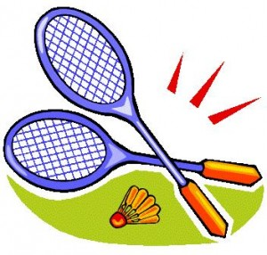

vamo, vamo, vamo…
SEM TREINOS!!!!

Pensei neste feriadão prolongado em fazer uma caminhada forte e corrida em subida em Atibaia.
Após ter cumprido meu dever cívico fomos para Atibaia, o tempo estava bom e no final da tarde resolvi jogar Badminton com Sy e depois faríamos um treino com pequenos tiros na rua.
Bom, estávamos jogando badminton muito animadas há uns 30 min, rendendo até um bom suador. Avisei Syssi para evitar jogar a cestinha fora da quadra, pois tinha alguns formigueiros, cujas formigas tem uma picada tão ardida e dolorida e eu não queria ser vítima delas.
Num bate e rebate, eis que eu igual à ilustração abaixo ao tentar rebater a cestinha,

pisei em falso no beiral da quadra que tem um desnível para a grama, virei o pé direito e cai por cima!!!!!!!!!!!!! Só gritei de dor e pedi gelo para a Sy. Do jeito que cai fiquei !!! Como ela demorava em voltar para a quadra, subi mancando, tirei o tênis e tomei uma ducha fria rapidamente. Mas não consegui colocar o pé no chão……. apliquei gelo e a dor continuava intensa. Não teve jeito e pedi ao maridão para me levar ao hospital.
Até o hospital e enquanto aguardava para ser atendida fiquei com o pé para cima e com gelo no local. Fizemos Raio X, que não acusou nada e como o local estava dolorido o medico resolveu imobilizar o tornozelo por 3 dias, com repouso absoluto pelo mesmo período, receitou ainda antiinflamatório e analgésico.
Era tudo que não queria, um simples jogo na quadra causou um repouso forçado e nem sei se poderei correr no próximo final de semana………… ainda sinto dolorido o local.
Por fim……………. torci o tornozelo no Dia das Bruxas comemorado pelos americanos e ingleses, só restando um pensamento……………….. tinha Bruxa solta no meu pedaço!!!!!!!!!!!!!!!!!!!!
Estou fazendo tudo que foi recomendado pelo médico para poder voltar logo para as ruas…………. e enquanto isso estou devorando um livro que me emprestaram, aliás, estou adorando-o, cujo assunto é o oposto de minha situação atual…………. o nome do livro?! Nascido para Correr.
Boa semana e até mais…………….

.jpg "DSC01769 (1024x576)")
.jpg "DSC01874 (1024x576)")
.jpg "DSC01927 (1024x576)")
.jpg "DSC01942 (1024x576)")
.jpg "DSC01947 (1024x576)")


Dra. Ana, espero que o restabelecimento seja pleno. Imprevistos acontecem com todos que praticam esportes, mesmo como divertimento. Vamos! Vamos! Vamos! (mas só após estar totalmente apta para as corridas).
Melhoras, Ana! Cuida direitinho desse tornozelo aí, viu?
Puxa, Ana, que coisa!
Pensamento positivo. Eu torci o tornozelo no oníbus e treinei e corri a maratona do Pão de Açucar ainda com dores.
Tirando o gesso, comece com caminhadas e vamo, vamo, vamo…
Ana,
Você é forte e agora, prinicipalmente, mostrará isso, lidando bem com a sua dificuladade e incentivando, sem perder o otimismo, a Ana Amélia que também vem sentindo dores.
A familia Shibata é guerreira e todos nós estamos na torcida e para ajudar no que for preciso para manter nossa equipe feliz, sempre!
Dr. Gontran,
Estou fazendo tudo nos conformes para meu restabelecimento seguro e rápido.
obrigada
Fábio,
estou cuidando bastante,
obrigada pelo apoio
Alecao
nao sei se consigo treinar, pois praticamente joguei todo meu peso no tornozelo ao cair…….. doeu na hora, enfim………….. logo estarei rodando..
obrigada
eita…hoje faremos ressonância de baciada…hahahha….
agora vamos esperar o pé melhorar para voltar aos treinos hein!!
Claudiao
Enquanto aguardava o medico no PS me questionei se isso teria acontecido se eu estivesse de chinelas ou descalça, talvez não………… Pq lendo o livro “Nascido para correr” todos são unissonos, nao precisamos de tenis específico para corrida……… entao ao tentar me precaver…….. talvez tenha causado um mal maior, ou já estava escrito nas estrelas………..
enfim, hj a noite faço a ressonância (e Melinha vai junto para fazer o dela tb) e logo saberei a extensão………..
A peteca está no ar……… pois tenho dentro de mim que Tudo Posso…………… dia 14 quero fazer minha estreia nos 10k, mesmo q seja para caminhar um kadinho……… já que corro contra o tempo agora.
Brigaduuuuuuuuuuuuuuuuuuuuuu
Minha filhona
Familia unida até nas dores……. rs ……… só assim para vc tambem fazer seus exames e afastar de vez essa dor nas canelas…………..e q nao seja canelite.
Espero que meu pézinho nao me desaponte……………. temos muitas corridas neste mes!